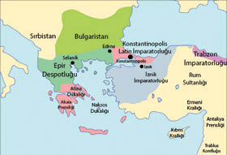
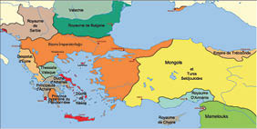

Batı Avrupa’nın Konstantinopolis’i Fethi ve Yenilgisi
Bu kitabı okumak zahmetine katlanan siz, şu an uzun uzadıya anlattığım 1204 Haçlı talanıyla, sahte Papalık kurumuna adanmış asıl konudan uzaklaştığımı sanabilirsiniz. Ama değil. Bu talan, tam da Hıristiyan âlemine öncülüğün Konstantinopolis Patrikliğinin meşruiyetinden koparılıp Roma Papalığının gayrimeşruiyetine bağlanmasının ilk fiili uygulamasıdır.
Bu talan, Konstantinopolis’in iki yüzyıl sonra Türklerin eline geçmesini kolaylaştırmakla kalmadı; tüm dünya tarihinin seyrini ve jeopolitik güç dengelerini değiştirdi.
Başkenti Haçlıların eline geçen Doğu Roma İmparatorluğu fiilen parçalandı.
Konstantinopolis’te 1204’ten öteye kısa ömürlü de olsa “Imperium

Parçalanmış Doğu Roma İmparatorluğu, 1230
Romaniae” (Romanya İmparatorluğu) adı altında bir Latin devleti kuruldu ve elbette Papa’nın ruhani liderliğine bağlandı. Papa İnnocentius, Patrikhane’nin başına Latin bir kardinal, zaten tüm kiliselere de Latin papazlar atadı. Ayasofya, katedrale dönüştürüldü ve tapınaklarda Yunanca yapılan Ortodoks ayinleri yasaklanıp Papa’nın adına, Latince yapılan Katolik ayinleri başladı.
Haçlı işgali sırasında başkentten kaçmayı başaran Doğu Roma soyluları, biri “Trabzon İmparatorluğu”, öteki “İznik İmparatorluğu” olarak iki ayrı devlet kurdular. Latinlerin ortadan kaldırdığı Konstantinopolis Ekümenik Patrikliği makamı ve merkezi İznik’te yapılandı.
Doğu Roma’dan arta kalan saraylıların ve Fener Patrikhanesi’nin hicreti, 1261 yılına kadar sürdü.
İznik’teki Greko Romen İmparatorluk, 1235’te Makedonya ve Trakya’yı Latinlerden geri almayı başardı. Bulgarlarla ittifak yapan Mihail Palailogos ise 1261’de önce Mora’yı, ardından Konstantinopolis’i yeniden fethederek, paramparça imparatorluğu bir ölçüde birleştirip, ayağa kaldırmayı başardı.

1265’te (Doğu Roma) Bizans İmparatorluğu
Fener Ekümenik Patrikliği, kadim başkente geri döndü. Papa’nın atadığı Latin Patrik ve papazlar kentten kovuldu. Kiliseler, yeniden Ortodoks ritüellere dönüp Ekümenik Patrikliğe bağlandılar.
Latin işgalcileri kovup Doğu Roma tahtına bileğinin gücüyle oturan Mihail Palailogos, başkente yıkılan görkemini yeniden kazandırmak üzere imar çalışmaları başlattı. Ama Konstantinopolis’teki tam bin yıllık Venedik mahallesini ve ticaret kontuarlarını yıktı.
Venedik Cumhuriyeti, 1084 yılında imzalanan bir anlaşmayla, İmparatorluğun bin yıldan beri ayrıcalıklı ticaret ortağıydı. Oysa 1204 yılındaki talanın da en büyük suç ortağı olmuş, Konstantinopolis’in Latin işgalinden öteye Doğu Roma’nın bütün ticaret merkezlerini ele geçirmişti. Mihail Palailogos, işte bu anlamda devleti içinden vuran “dost” hainleri temizliyordu.
Ne var ki eski görkeminin gölgesi kadar kalan imparatorluğun, ne ticari deniz filosu ne de askerî donanma oluşturacak gücü vardı. Mihail Palailogos, Venedik’ten geri aldığı ayrıcalıkları, elbetteki baş rakibi ve düşmanı Ceneviz Cumhuriyeti’ne verdi. Yapılan anlaşmaya göre Ceneviz’in ticari gemileri Konstantinopolis’in deniz ticaretini üstleniyor, savaş gemileri de donanmasını oluşturuyordu.
Doğu Roma başkentine yerleşen Ceneviz kolonisi, bugün Galata dediğimiz mahalleyi kurdu ve surlarla çevirdi. Çağımıza miras kalan Galata Kulesi, 1348 yılında bu surların kuzey ucuna –507 yılında yapılıp zamanla harap olan bir deniz fenerinin temelleri üstüne– inşa edilmiştir. Kule, Ceneviz döneminde “Christea Turris” (İsa Kulesi) olarak anılırdı.
Konstantinopolis tahtında, iki yüzyıl sürecek Palailogos Hanedanı dönemi başlamıştı.
Ama Doğu Roma, bir daha asla eski sınırlarına ve gücüne kavuşamayacak, daima iki cephede dövüşmek ve Batı’dan hücum eden daha beş Haçlı Seferi’ne göğüs gererken, Doğu’dan ilerleyen Türklere adım adım yenilmek zorunda kalacaktı.
İmparatorluğun ufalanması, kimi eyaletlerin giderek başına buyruk davranmasına yol açarken; Fener Patrikliğinin, Doğu Roma sınırları dışındaki Ortodoks Kiliselerine “ekümenik” öncülüğü de sarsılmıştı.